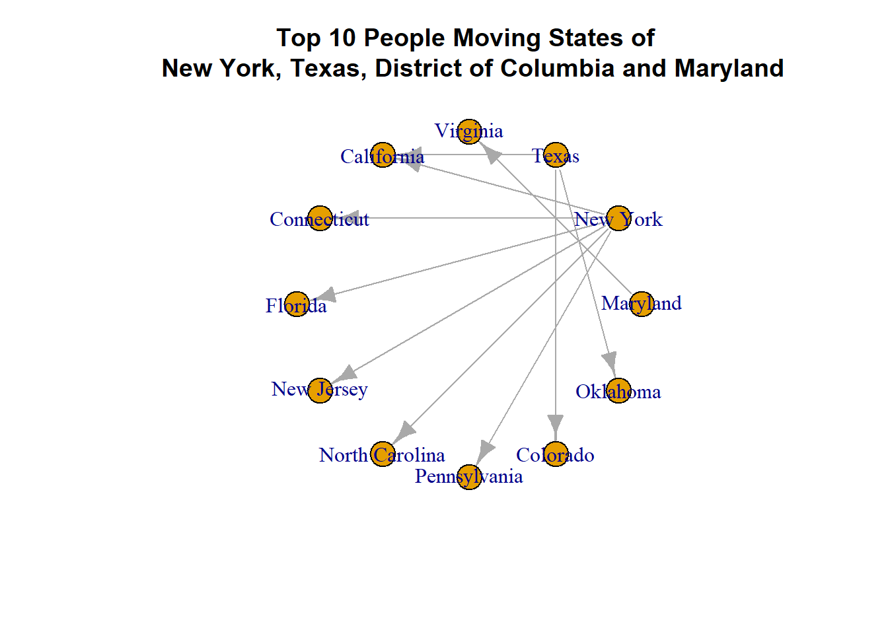
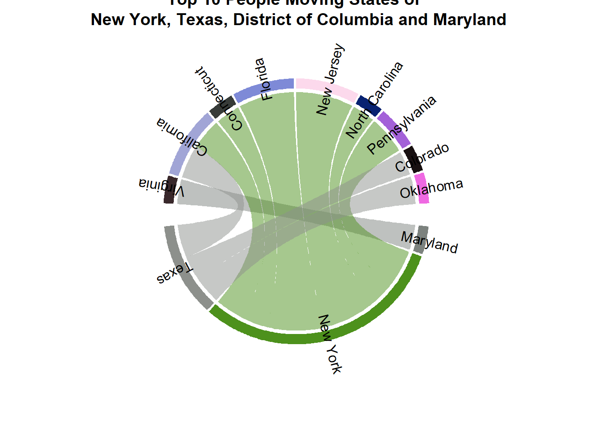

library(tidyverse)
library(igraph)
library(circlize)
library(knitr)
opts_chunk$set(fig.show = "hold")# select rows
data=readxl::read_xls('data/State_to_State_Migrations_Table_2018.xls', skip=4)# Set the target column
data = dplyr::rename(data, 'target'='Current residence in...1')
# remove no need columns
data = select(data,-contains('Current residence in') )
data = select(data,-seq(3,119,2) )
data = select(data,-c(2:5))
# view data
data## # A tibble: 81 x 56
## target ...10 `Different stat~ ...15 ...17 ...19 ...21 `Different stat~ ...26
## <chr> <chr> <chr> <chr> <chr> <chr> <chr> <chr> <chr>
## 1 <NA> Alab~ Alaska Ariz~ Arka~ Cali~ Colo~ Connecticut Dela~
## 2 <NA> Esti~ Estimate Esti~ Esti~ Esti~ Esti~ Estimate Esti~
## 3 <NA> <NA> <NA> <NA> <NA> <NA> <NA> <NA> <NA>
## 4 Unite~ 98194 39246 1795~ 69724 6911~ 2034~ 114235 33395
## 5 <NA> <NA> <NA> <NA> <NA> <NA> <NA> <NA> <NA>
## 6 Alaba~ N/A 419 1915 1051 2659 1672 747 826
## 7 Alaska 518 N/A 910 722 3455 1847 0 0
## 8 Arizo~ 2801 2743 N/A 1487 68516 11517 503 49
## 9 Arkan~ 438 413 602 N/A 3728 3255 159 126
## 10 Calif~ 4591 2155 33670 2573 N/A 18755 6366 1143
## # ... with 71 more rows, and 47 more variables: ...28 <chr>, ...30 <chr>,
## # ...32 <chr>, `Different state of residence 1 year ago
## # (continued)...35` <chr>, ...37 <chr>, ...39 <chr>, ...41 <chr>,
## # ...43 <chr>, `Different state of residence 1 year ago
## # (continued)...46` <chr>, ...48 <chr>, ...50 <chr>, ...52 <chr>,
## # ...54 <chr>, `Different state of residence 1 year ago
## # (continued)...57` <chr>, ...59 <chr>, ...61 <chr>, ...63 <chr>,
## # ...65 <chr>, `Different state of residence 1 year ago
## # (continued)...68` <chr>, ...70 <chr>, ...72 <chr>, ...74 <chr>,
## # ...76 <chr>, `Different state of residence 1 year ago
## # (continued)...79` <chr>, ...81 <chr>, ...83 <chr>, ...85 <chr>,
## # ...87 <chr>, `Different state of residence 1 year ago
## # (continued)...90` <chr>, ...92 <chr>, ...94 <chr>, ...96 <chr>,
## # ...98 <chr>, `Different state of residence 1 year ago
## # (continued)...101` <chr>, ...103 <chr>, ...105 <chr>, ...107 <chr>,
## # ...109 <chr>, `Different state of residence 1 year ago
## # (continued)...112` <chr>, ...114 <chr>, ...116 <chr>, ...118 <chr>,
## # ...120 <chr>, `Abroad 1 year ago` <chr>, ...125 <chr>, ...127 <chr>,
## # ...129 <chr># the amount of columns is 56
# ready for the rename processing
col_names = colnames(data[,2:56])
new_col_names = as.character(unlist(data[1, 2:56], use.names = FALSE))
# rename
data = rename_at(data,vars(col_names),~ new_col_names)
# drop NULL values and no need columns
data = drop_na(data)
data = filter(data,!target %in% c('United States2','Puerto Rico','Guam') )
data = gather(data,key='source', value='count' ,-target)
data$count = data$count %>% as.numeric()
data = data[,c(2,1,3)]# finished and view data
head(data)## # A tibble: 6 x 3
## source target count
## <chr> <chr> <dbl>
## 1 Alabama Alabama NA
## 2 Alabama Alaska 518
## 3 Alabama Arizona 2801
## 4 Alabama Arkansas 438
## 5 Alabama California 4591
## 6 Alabama Colorado 3597temp = filter(data,source %in% c('New York', 'Texas', 'District of Columbia', 'Maryland'))
tmep = group_by(temp,source)
temp = top_n(temp, 10, wt=count)
network1 = graph.data.frame(temp)
network2 = temp
plot(network1,layout=layout_in_circle(network1))
title('Top 10 People Moving States of \n New York, Texas, District of Columbia and Maryland')
chordDiagram(network2, annotationTrack = c('grid'),preAllocateTracks = list(track.height = max(strwidth(unlist(dimnames(network2))))))
circos.track(track.index = 1, panel.fun = function(x, y) {circos.text(CELL_META$xcenter, CELL_META$ylim[1], CELL_META$sector.index, facing = "clockwise")},bg.border = NA)
title("Top 10 People Moving States of \n New York, Texas, District of Columbia and Maryland")